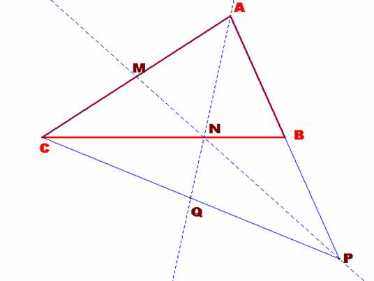

Problema 275
En un triángulo ABC, M es el punto
medio del lado AC y N es el punto del lado BC tal que CN = 2BN. Si P es el
punto de intersección de las rectas AB y MN, demuestra que la recta AN corta al
segmento PC en su punto medio.
Para el aula.
X Olimpíada Matemática Rioplatense ( San
Isidro, 12 de Diciembre de 2001)
(Nivel I – Primer Día)
Solución
de F. Damián Aranda Ballesteros, profesor del IES Blas Infante de Córdoba,
España.
|
 |
La transversal MN determina el punto P en el lado AB y por el Teorema
de Menelao tenemos que se verifica la relación: .
Sustituyendo sus valores tenemos que:
El punto B es el punto medio del segmento AP.
Como el punto N divide a la mediana CB según la razón 3:1, se tiene que N es el
baricentro del triángulo APC. Consecuentemente, la ceviana
que parte del vértice A y pasa por el baricentro N intercepta al lado opuesto
PC en su punto medio.
Luego la recta AN corta al segmento PC en su punto medio.